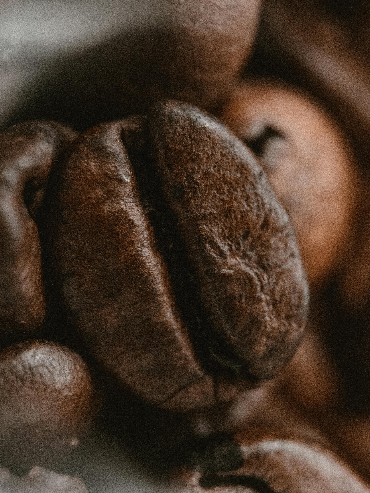
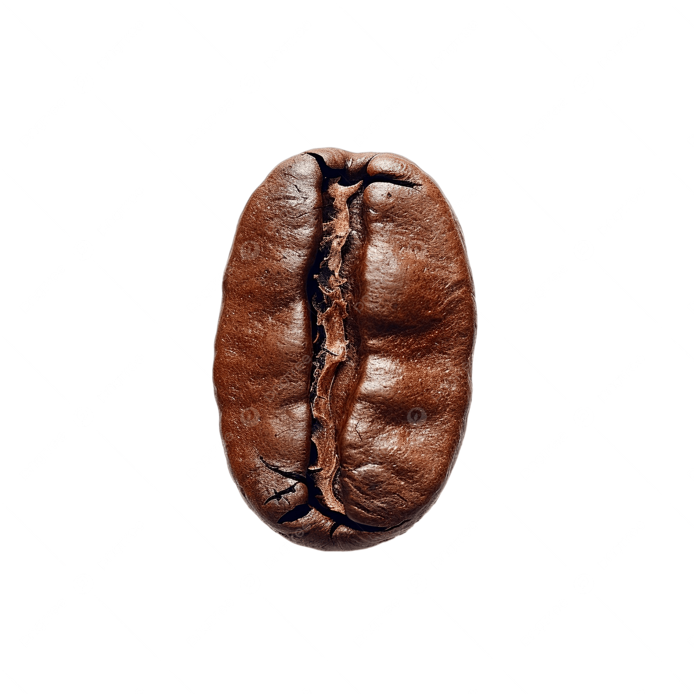

Di antara embun yang mengendap di bibir cangkir dan aroma kopi yang mengusir rasa khawatir, ada dua nama yang selalu hadir dalam perbincangan para pecinta kopi, yakni Robusta dan Arabika. Mereka lahir dari tanah yang sama, tetapi dipelihara dalam cerita yang berbeda. Seperti manusia, mereka pun memiliki watak dan memiliki cara berbicara tersendiri kepada para penikmatnya.
1. Robusta
Jenis kopi ini jadi teman setia bagi petani yang tidak punya banyak waktu untuk merawat dengan ekstra hati-hati. Adapun ciri dari jenis kopi ini, yakni bentuk bijinya yang kecil, bulat, dan warnanya gelap. Ketika diseduh, jenis kopi ini menyapa dengan rasa yang tegas, pahit sedikit asam, dan kadang terasa tanah yang basah di baliknya. Kadar kafeinnya tinggi sehingga cocok agar terbangun dari lamunan panjang.
Pengolahannya cenderung mudah dengan proses yang singkat dan hasilnya melimpah, sehingga harga jualnya lebih terjangkau. Namun bukan berarti murahan karena Robusta punya kekuatan untuk para pekerja keras atau siapapun yang butuh tenaga ekstra untuk berdiri tegak di tengah sibuknya dunia.
2. Arabika
Berbeda dengan saudaranya, Arabika lahir dengan penuh tantangan, tetapi justru karena itulah, hasilnya menawan. Jenis kopi ini memiliki bentuk biji yang lonjong dan panjang. Saat diseduh, Arabika menyapa pelan, penuh kesopanan, rasanya lembut, manis, kadang terdapat rasa asam dominan yang justru menyempurnakan.
Kadar kafein Arabika lebih rendah sehingga banyak yang menjadikannya pilihan untuk momen santai. Namun, di balik kelembutannya, terdapat proses panjang yang harus dilewati. Pengolahan Arabika sangat butuh perhatian seperti suhu yang stabil, pengeringan yang telaten, dan pemilahan yang nyaris seperti ritual. Tidak heran jika harganya lebih mahal.
Keberadaan dua jenis kopi tadi bukan untuk dibandingkan karena kopi adalah cermin dari apa yang kita butuhkan hari ini. Jika kamu ingin tenaga, semangat, dan langkah yang pantang berhenti, maka Robusta siap jadi teman produktifmu. Namun, jika kamu butuh jeda, keheningan, dan rasa yang membawa pulang ke dalam diri, Arabika cocok jadi teman berkontemplasi di sore hari yang sunyi.